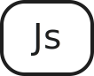
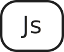

05
INDHOLD
VIDEOSITE


I dette tema lærte vi video- og fotoproduktion i Premiere Pro. Vi klippede en video af et interview med en passioneret person. Vi brugte b-rolls, mikrofoner og optog ekstern lyd, som vi efterfølgende sammensatte med videoen.
PROCES
Jeg anvendte cross dissolve effekten for at skabe en naturlig og blød indledning og afslutning på videoen.
Jeg brugte både selvoptagede b-rolls af personen med passion samt stock footage for at tilføje variation og dybde til min video. Formålet var at holde seerne fanget og skabe en visuel interesse gennem forskellige skud og perspektiver.
Vi optog interviewet i normalt perspektiv og brugte naturlig belysning, hvilket satte fokus på personen, der blev interviewet. Jeg anvendte tekst på min introduktion for at formidle information om videoen, herunder hvem der havde lavet den og hvem der optrådte i den. Dette gav seerne en klar forståelse af ophavsretten til videoen samt de personer, de kunne forvente at se i den.


BILLEDER
I dette emne skal vi også udføre efterbehandling og beskæring af billeder af vores interviewperson, som skal bruges på websitet. Jeg eksperimenterede med farvejustering på begge billeder. På det første billede forstærkede jeg lidt farver og kontraster, mens jeg på det andet billede skabte en sort-hvid-effekt uden for meget skygge.


VIDEO
KODER
I html'en ses hvordan jeg har indlejret de to videoer på mit videosite, "controls" tilføjer en play og pause knap til videoen, "src" er der hvor jeg indsætter url'en til videoerne. "iframe" til Youtube videoen er hentet fra youtube. Jeg har givet begge videoer en css class, til at styre deres højde og bredde.


VIRKSOMHEDSSITE
Senere i temaet valgte vi i vores studiegruppe at arbejde med Falafel Factory, en virksomhed med en hjemmeside, der kunne optimeres. Vi indgik en aftale med ejerne om at forbedre deres hjemmeside. Udover at optimeret hjemmesiden, skød vi en video til sitet og tilføjede flere billeder og mere indhold for at forbedre brugeroplevelsen. Min rolle var at stå for designprocess, samt kodning. Derudover var jeg også lidt indover videoen.
PROJEKTSTYRRING
Til projektstyring brugte vi Trello og afholdt daglige Scrum-møder. Vi blev introduceret til Github som vi i gruppen kodet i, tilslut udgav vi vores færdige site på Netlify.
ANALYSE - NUVÆRENDE SITE
Vi udførte en analyse af Falafel Factorys eksisterende hjemmeside ved hjælp af gestaltlovene og designprincipper for at opnå en dybere forståelse af deres site.
TEST - NUVÆRENDE SITE
Vi blev introduceret til tests af hjemmesider, herunder heuristisk test, 5-sekunders test, BERT og lighthousetest, som vi brugte både før og efter vores redesign af deres site.


MOODBOARD
Målet, som kan ses i moodboardet var at opnå et mere moderne, elegant, friskt og ungdommeligt (men stadig modent) udseende til hjemmesiden. Vi ønskede også at skabe en nem navigation og fokusere på at ineplementere flere og bedre billeder af deres mad.
STYLETILE
Efterfølgende udarbejdede vi et styletile for at opretholde en ensartet stil, mens vi arbejdede individuelt i vores gruppe. Styletilet omfattede et nyt logo, friske farver baseret på indholdet af maden, kontraster, fonte og UI-konventioner. Dette hjalp med at sikre, at vores individuelle bidrag var sammenhængende og fulgte den samme visuelle tråd.

WIREFRAMES
Vi udarbejdede wireframes for at visualisere vores tanker og ideer til hjemmesidens layout. Dette gav os et overblik over strukturen og placeringen af elementer på siden, som vi derefter kunne kode ud fra. Wireframes hjalp os med at planlægge og kommunikere vores designkoncepter på en visuel måde, inden vi gik i gang med selve implementeringen af hjemmesiden.

PROTOTYPE
Ud fra vores wireframes udarbejdede vi prototyper, der viste, hvilket indhold der skulle inkluderes på de forskellige sider, samt hvordan det skulle præsenteres. Prototyperne gav os mulighed for at få en realistisk visualisering af, hvordan det endelige indhold ville se ud og fungere på hver side. Det hjalp os med at evaluere og finjustere layoutet, navigationen og brugeroplevelsen, inden vi gik videre til den endelige implementering af hjemmesiden.


VIDEO
Vores video består udelukkende af en sekvens af forskellige klip i slowmotion. Videoen mangler lyd, interview-delen, titler, tekst og B-rolls. Man kan sige, at hele videoen fungerer som en lang B-roll-stil. Vi brugte et Canon EOS 70D-kamera og et Micro-kamera, som vi lånte fra Tech-Lounge. På størstedelen af klippene blev der anvendt en Lumetri Preset til farvejustering. Desuden tilføjede vi et mørkt overlay over klippene for at gøre teksten, som vi placerede ovenpå i HTML, synlig og letlæselig.
TEST - REDESIGNEDE SITE
Til sidst udførte vi en BERT-test af vores redesignede løsning for at vurdere, om der var sket ændringer i brugerens opfattelse af siden. Derudover udførte vi en heuristisk test, som hjalp med at identificere eventuelle problemer og rettelser. Vi udførte en Lighthouse-test for at evaluere, hvor meget siden var blevet optimeret i forhold til SEO og indholdsaspekter efter den redesignede løsning. Disse tests bidrog til at måle effekten af vores ændringer og identificere yderligere forbedringsområder.
 
